Selge in Pisidia
2026-11-14 · ahowl11

Disclaimer - This Dev diary was written by @Mausolos of Mylasa our lead historian, I am simply posting it. All screens are taken by the wonderful @Vas & @Lollygagging
Welcome back to another dev diary in Anatolia and another faction you have seen in a very imperfect form before: Selge in Pisidia: Selge was a major city on a fertile plateau ca. 1000m over the Mediterranean Sea. Its inhabitants grew olives and wine and collected styrax, a resin material similar to incense that was exported to Egypt. Strabo of Amaseia (ca. 63 BC-25 AD), who wrote a geographic description of the world in the time of Augustus, was clearly impressed by Selge's natural, political and military strength:
"Selge was founded at first by the Lakedaimonians as a city, and still earlier by Kalchas; but later it remained an independent city, having waxed so powerful on account of the law‑abiding manner in which its government was conducted that it once contained twenty thousand men. And the nature of the region is wonderful, for among the summits of the Tauros, there is a country which can support tens of thousands of inhabitants and is so very fertile that it is planted with olive in many places and with fine vineyards and produces abundant pasture for cattle of all kinds; and above this country, all round it, lie forests of various kinds of timber." (Strab. 12.7.3C570)
It was also famous for the Selitian Oil, a popular medicine, similarly praised by Strabo and Pliny (nat. hist. 15.7.2). All these exports would have made the Selgians a vibrant community, and by the 4th century BC, they started to convert this wealth into political power. When Alexander the Great advanced through the area on his conquest of the Persian Empire, Selge preserved its autonomy by establishing friendly relations with the king.
The Theatre of Selge
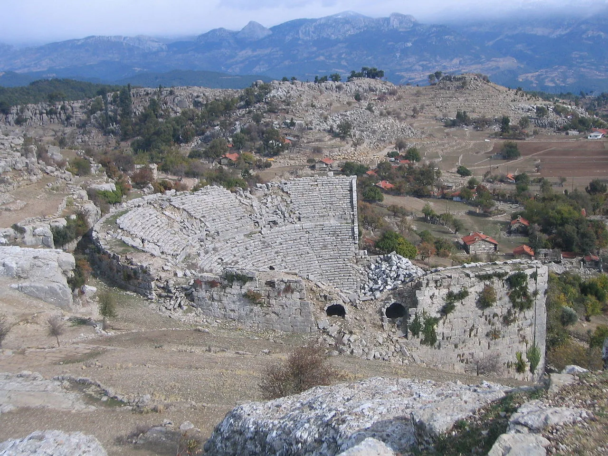
As Strabo emphasises:
"The region around the city and the territory of the Selgians has only a few approaches since their territory is mountainous and full of precipices and ravines, which are formed, among other rivers, by the Eurymedon and the Kestros, which flow from the Selgic mountains and empty into the Pamphylian Sea. But they have bridges on their roads. Because of their natural fortifications, however, the Selgians have never even once, either in earlier or later times, become subject to others, but unmolested have reaped the fruit of the whole country except the part situated below them in Pamphylia and inside the Taurus, for which they were always at war with the kings." (Strab. 12.7.3C571)
These kings were the Seleucid and, later, the Attalid monarchs. The first significant war occurred in 218 BC when Selge attacked the city of Pednelissos. At the time, the pretender Achaios (reigned 221-213 BC) controlled most of Seleucid Asia Minor west of the Tauros mountains (Polyb. 4.2.5). He had reduced the Attalid kingdom to a local power again and was the protector of Pednelissos. Upon hearing the news, he duly dispatched 6000 infantry and 500 horse riders to relieve the city (Polyb. 5.72.1-4). The Seleucid commander Garsyeris called upon all Pisidian and Pamphylian cities free from Selgian rule to support him and received 8000 Hoplites from the Etennians and 4000 men from Aspendos (Polyb. 5.73.3). This force initially suffered severe losses but eventually broke the siege of Pednelissos. Polybios reports that the Selgians and their allies lost 10 000 men in this battle, which shows they must have had a very sizeable army at their disposal (Polyb. 5.73-7-16).
Yet, many allies deserted the Selgians after the defeat, and Garsyeris proceeded to besiege the city. The Selgian council appointed Logbasis to open negotiations with the Seleucid commander. Still, Logbasis was far more interested in gaining the favour of Achaios and offered to betray the city if the king himself should show up. Achaios agreed and ordered Logbasis to call the Selgians to a council, during which he would attack. A goat herd, however, noticed the Seleucid soldiers when they tried to climb the walls, and the Selgians immediately realised what was happening. They killed Logbasis on the spot and then charged the Mysian mercenaries Garsyeris was commanding. When 700 of them had been slain, Achaios decided to stop the attack and retreat (Polyb. 5.74.4-76.8).
The Selgians made a truce and agreed to pay 700 talents to Achaios and the Aspendians. Polybios concludes: "Thus the Selgians, after nearly losing their country owing to the impious treachery of Logbasis, preserved it by their own valour and disgraced neither their liberty nor their kinship with the Lakedaimonians." (Polyb. 5.76.11)
After these events, Selge worked hard to regain its former position and probably made good use of the death of Achaios in 213 BC and the campaigns of the victor, Antiochos III, in the East. When Antiochos was defeated by Romans and Attalids at Magnesia in 189 BC, the Romans gave the territory of Selge to Eumenes II (r. 197-159 BC), the king of Pergamon. The Selgians were far from submitting under Eumenes and lodged an official complaint in Rome. In the 160s BC, Eumenes assembled his forces and campaigned against the Selgians to subjugate them (Thonemann, Attalid Asia Minor (2013), p. 54). Still, the mention in the sources of a second war against Selge by his successor Attalos II (r. 159-138 BC) in the 150s BC casts doubt on how successful the first one was - especially since we read that Pisidian forces had caused much devastation in Attalid lands (SEG 44.1108; Trog. Prol. 34). When Rome inherited the Attalid kingdom, the senate decided not to try and annex Selge and later put it under the official authority of Amyntas of Galatia (r. 36-25 BC; Meadows, Amyntas, Side, and the Pamphylian Plain (2006), pp. 2-3). In imperial times, Selge continued to flourish and grow.
Its famous slingers on a coin of Selge, 325-250 BC (two wrestlers left):
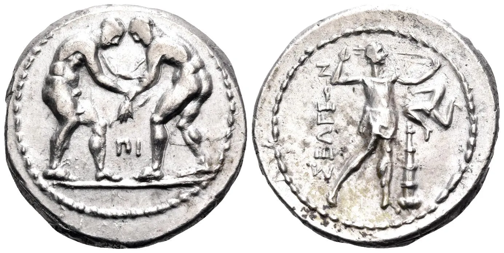
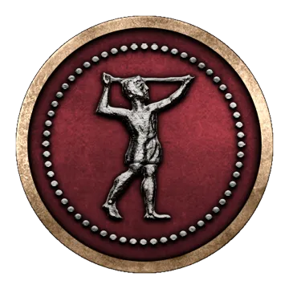
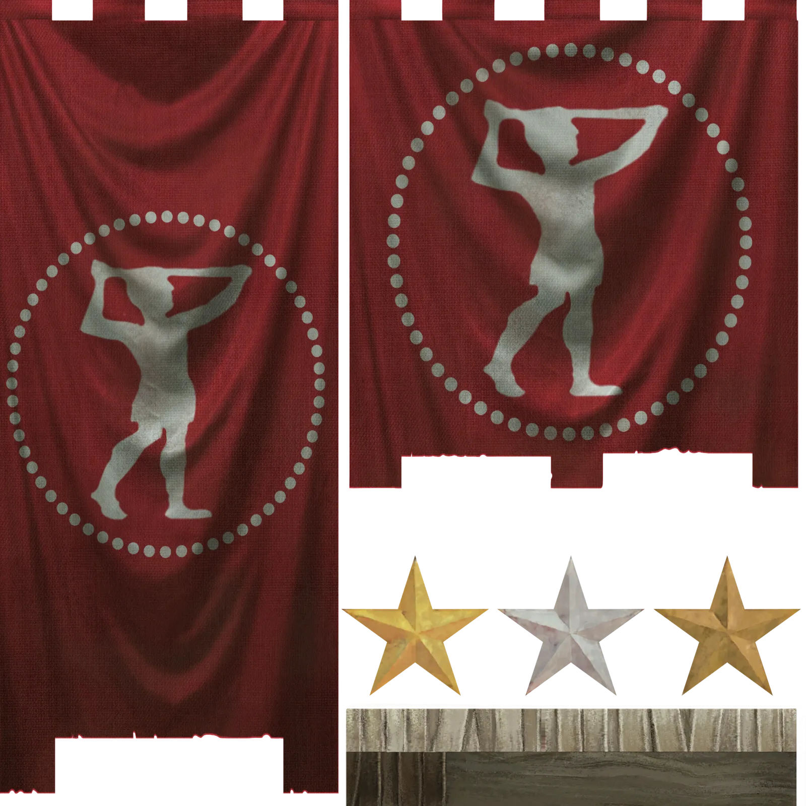
the starting position of Selge
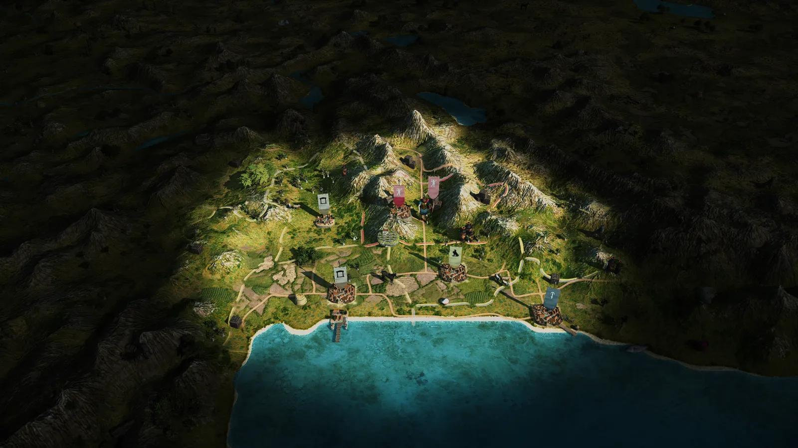
Pisidian Javelinmen are one of the tougher javelinmen units of Anatolia. They stand out for their horned helmets, which are described by Herodotus (7.76): "Brazen helmets protected their heads; and above these they wore the ears and horns of an ox fashioned in brass. They had also crests on their helmets; and their legs were bound round with purple bands.” Pisidian javelinmen were popular mercenaries during the Hellenistic period and appear in the armies of the Ptolemies (Post, Bithynian Army (2022), p. 14), Athens (IG II² 1957, l. 17), the Galatians (TAM II supp. Tlos 10) or the Hasmoneans in Judaea (Ios. ant. Iud. 13.374).
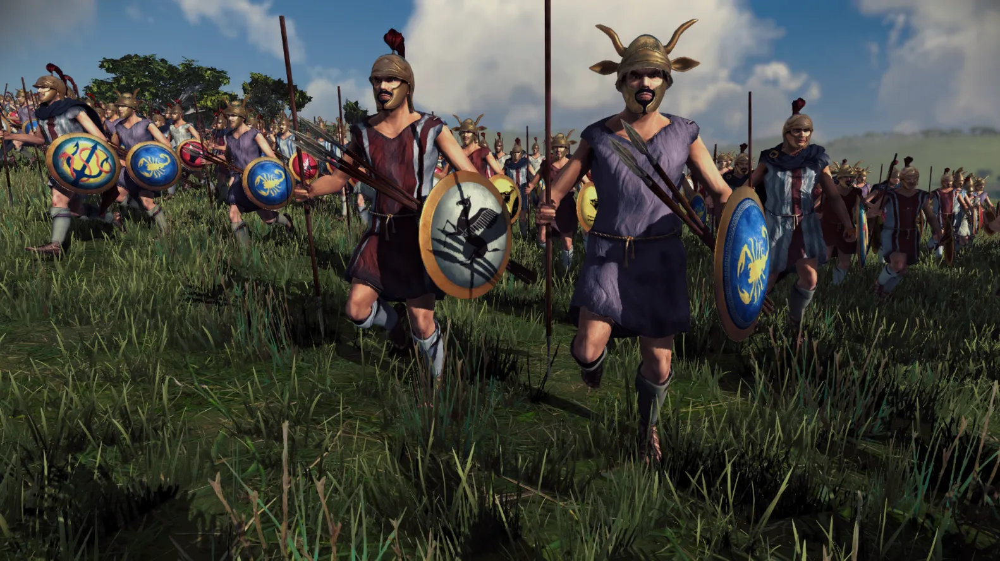
Pisidian Thureophoroi are based on the Pisidian mercenaries in the Ptolemaic garrison in Sidon, where they are depicted with thureos shields, Sidon helmets, swords and javelins (Sekunda, Hellenistic Infantry Reform (2006), pp 68-71). They, too, are attested as mercenaries for various other states like the Boiotian League (Bru, The Pisidians between Seleukids and Ptolemies (2024), pp. 185-190), but Arrian (Anab. 1.27-28) emphasises the lack of armour of Pisidian soldiers in the early Hellenistic period.
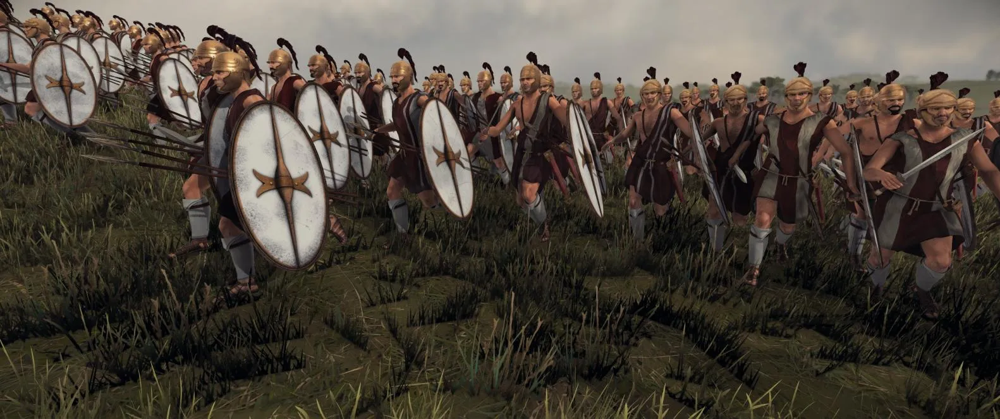
Pisidian slingers are a standard slinger unit representing the Pisidian hill people as well as those from major cities like Sagalassos or Termessos. They have no armour or shields, as is common for most slingers.
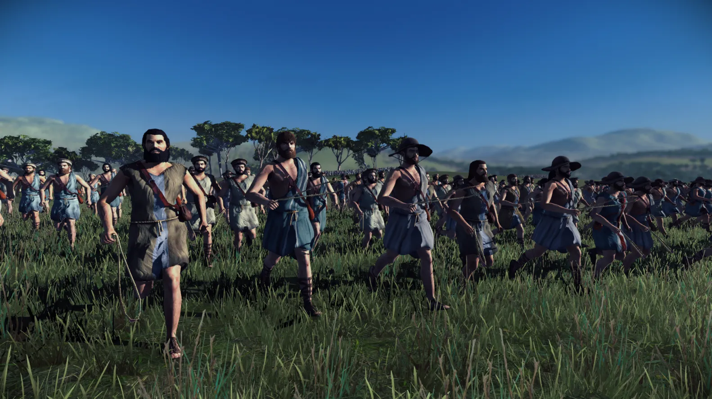
Selgian slingers are an elite slinger unit only from Selge itself. On the coins of Selge, slingers make regular appearances, suggesting that this way of fighting was very popular among the martial and famously independent Selgians and therefore their slingers must have been very skilled (see coin CNG_2693 below)
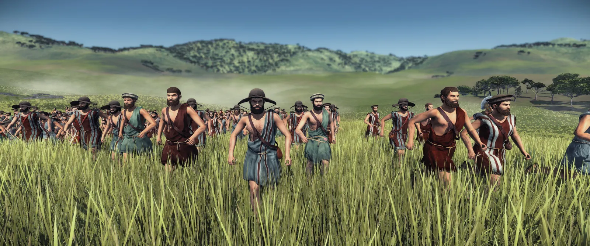
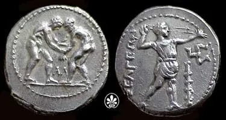
Pisidian Spearmen are based on the depiction of pelte shields and long spears on various Pisidian monuments and walls. They are a light spearmen unit and will hold the line only for a limited amount of time.
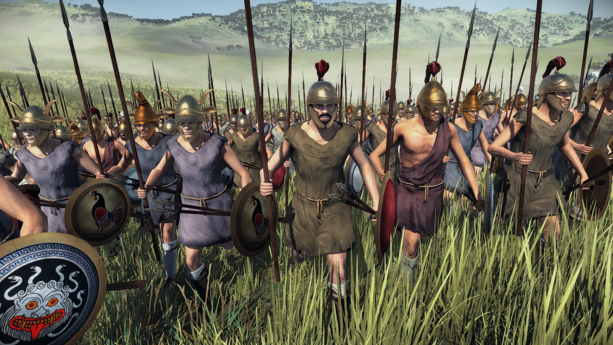
Pisidian brigands represent the mountain peoples of Pisidia and are armed as dual purpose light infantry with javelins and spears. Outside the few cities, most Pisidians lived along the rugged ridges of the region, which were inaccessible even for Alexander the Great (Arr. Anab. 1.27-28). The geographer Strabo (12.7.3) claims some of them made a living as pirates.
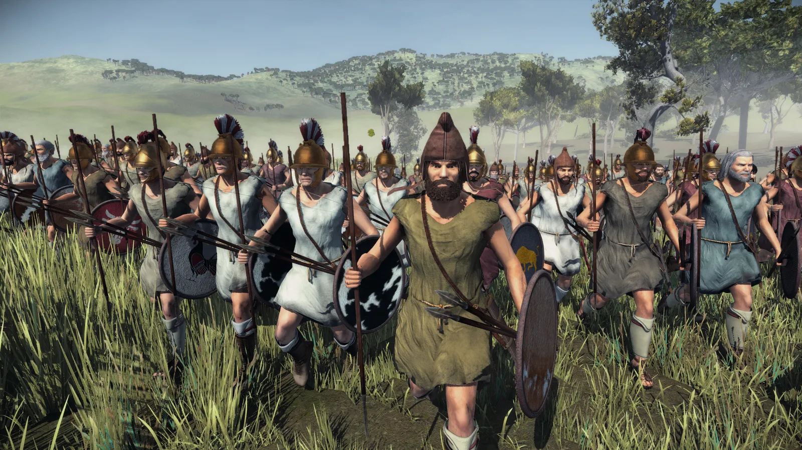
Pisidian heavy infantry is your best infantry unit and unlocked later in the game. In their full panoply, with big pelte-style shields, helmets, chainmail or muscle cuirasses and long Galatian sword, they are excellent sword infantry. Their armour and weapons are depicted on grave stelae from Sagalassos and other Pisidian towns from the early Hellenistic period into the imperial era (Kosmetatou, Macedonians in Pisidia (2005)).
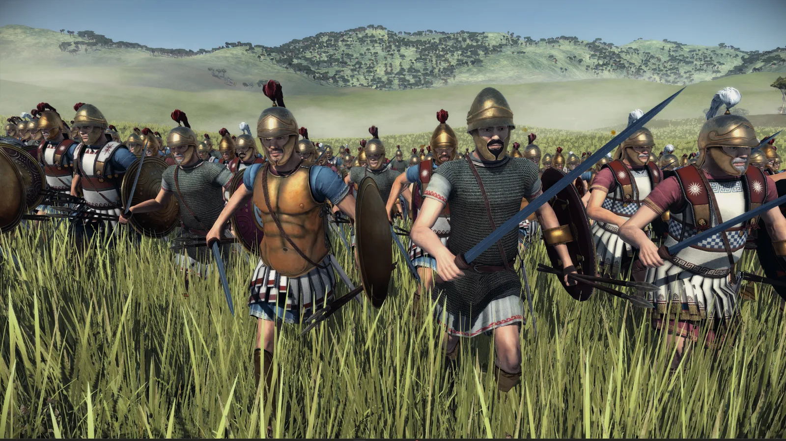
Pisidian Cavalry is your only unique cavalry unit, but armed with xyston, helmets and chainmail they, too, are a very efficient force. In the valleys or on the plateau of Selge, they would be an excellent addition to the infantry and missiles. One unique attribute, is that the Pisidian Cavalry also have longswords, which is unique for a Xystophoroi type unit, so they are better than other Xystophoroi in melee. It is still mainly a shock cavalry unit though!
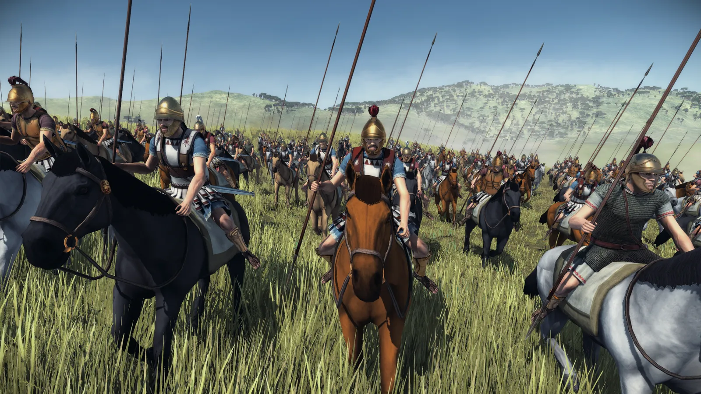
The general's bodyguard is an upgraded version of the Pisidian cavalry.
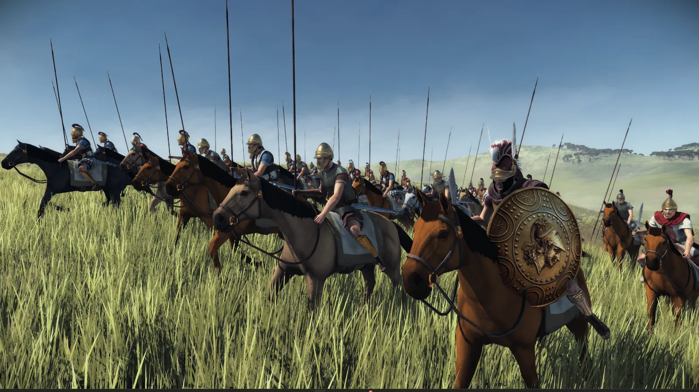
The chainmail on the Pisidian units may stem from Galatian influence and is attested by the grave stele of Salmamodes of Adada, a Pisidian mercenary in Ptolemaic service in Sidon at the end of the 3rd ir beginning of the 2nd century BC From the Istanbul Archaeological Museum
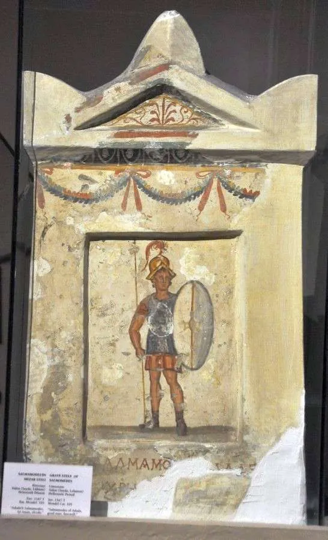
This concludes our Developer Diary for today! (Start here: https://discord.com/channels/714205632663912498/894286297802362931/1571150183578865696) Discuss your thoughts and questions in a channel and see you next time!